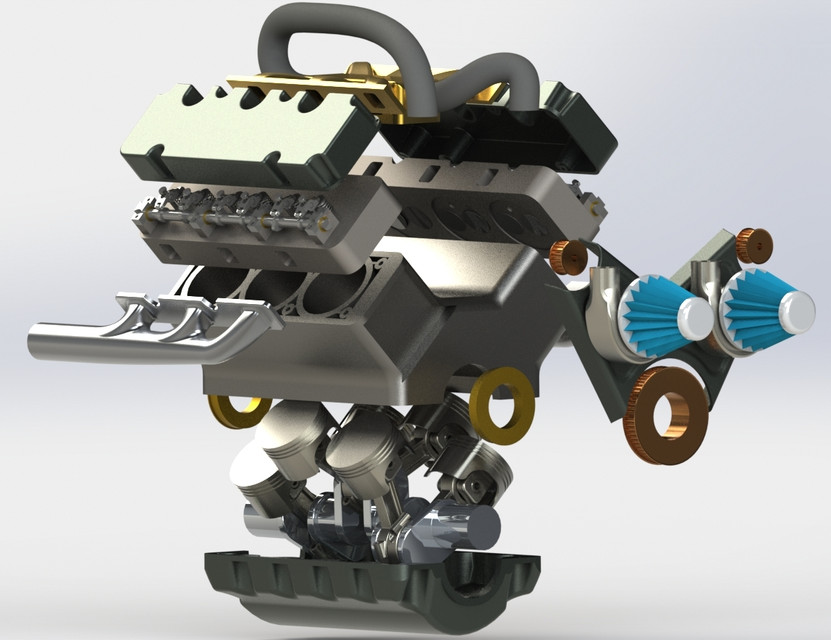
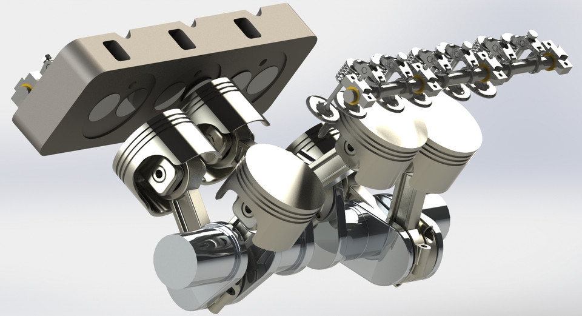

Mechanical design / CAD practice
V6 engine CAD assembly.
A SolidWorks practice assembly exploring component relationships, model organization, clearances, and kinematics.
CAD practice project. The available artifacts are assembly renders; manufacturing, combustion performance, and physical engine testing are not documented.
Assembly reasoning
The original project focused on understanding a complex multi-part assembly and the interaction of its components. Clearance and kinematic relationships are useful design checks, but rendered geometry alone cannot establish tolerance, strength, or operating performance.
Next evidence: add an assembly tree, a section view through the cranktrain, and a documented interference or motion study.

